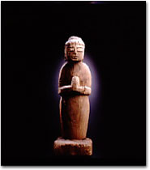

|
九州の神像
麻布で古い木地盆の、展示即売会をするという案内をもらった。眼の確かな骨董店が主催なので、良し悪しの見当はすぐついた。初日に列んで、一点くらいは求めたいと思ったが、この年の四月から、末の子が九州の医科大学へ行くのでお金がない。と、言ったら聞こえは良いが、授業料免除の大学なので、余りそのことは関係なく、単に我が家の慢性病といってよい、銭ナイカタルが悪化しただけである。しかし、そんな理由で、会場でつらい思いをするのも嫌なので、私は見に行くのをやめる固い決心をした。
何とか初日が過ぎた。薬の誘惑に打ち勝った麻薬中毒患者のような思いでほっとした。ところが、次の日の午前中、オートバイに股がった若い友人が、私の職場へやってきた。彼は慢性の骨董病患者である。ヘルメットをとった顔を見ると、鼻の穴が開いている。嫌な予感がした。というのは、美という薬で恍惚とすると、彼の鼻の穴が広がるのを、私は知っているからである。
不思議な御縁に思わず「買った！」
案の定、彼は「良い展覧会ですよ。どうして見に行かないのです？ 夜七時まで大丈夫だから、絶対見るべきですよ。バイクで運んであげましょうか？」などと言って、彼が気にいった木地盆の話をはじめた。そして、初日には沢山の人が列を作って、開店と同時に、ほとんどの品に赤札がついたと言った。むずむずしてきた私は、ほとんどの品に赤札がついたことを、くどいくらい確認してから、その日の夕方、彼のバイクで連れて行ってもらうことにした。
会場に陳列された木地盆は、使った人の育んだ美しさで、どれもこれも輝いていた。私はみんな売れていることもあって、個性的な表情をみせる美事な盆達を、安心して眺めながら至福の時を過ごした。そして、何も買わないはずだった私は、何と、盆ならぬ古いのこぎりを手にして店を出たのである。
どうやら木地盆を買えない反動が、私に古のこを買わせたようである。でも確かに、そののこぎりの木の柄のもつ、手ずれの美しさは、求める価値のあるもののように思われる……？
いわゆる骨董病患者を証明するのこを提げた私を、哀れむように見つめる若い友人と別れ、私は鳥居坂までやってきた。そして、その辺りに、老獪な骨董商の店があるのを思い出した。
この骨董商は、高嶺の花である珍品をちらつかせては、私を病の淵に誘い出し、何が嬉しいのかニタッとする奇妙な癖を持っている。何時も私はそのニタッに、不気味なものを感ずるので、余り近寄らないことにしているのだが……。
気がつくと、私は老獪な骨董商の店先に立っていた。玄関の戸をあけ、店の棚に置いてある品物を見ていると、奥の部屋からその骨董商が現われた。互いにぎょっとした顔つきで、型どおりの挨拶をした。すぐに床の間つきの部屋に案内された。私は部屋に通される前に、彼が店員に示したちょっとした仕草に、何やら危険なものを感じた。でも、もう遅い。部屋に入った。床の間を見た。あっと思った。心配したとおり、そこには私の大好きな木彫が置いてある。仏像か？ 何やら臼杵の石仏に似たお顔だなと思いながら座についた。
老獪な骨董商は、対面して座るやいなや、「平安時代の、九州の神像ですが、如何ですか」と言った。私は仏像のように思ったが、一瞥してすぐ、臼杵の有名な磨崖石仏群が、頭に浮かんだことだし、時代や産地は間違いないだろうと考えた。そして、同時に何となく不思議な感じがした。
何故なら私は、その二週間後に、息子の入学式に参加するため、九州へ行くことにしており、就いては一日、長年の夢だった臼杵の石仏を見学しようと思っていたからである。だから御縁を思わす彫像をちらつかせて、私を挑発しようとする彼の手には、我が家の全てが見える怪しの玉でもあるのかと不思議に思ったのである……。
そんな事情はさておき、とにかく老獪な骨董商は、金がないからと木地盆すら諦めていた私に、息子の入学、お祝い、九州、国東、臼杵、夢の平安木彫、守り神……といった、まるで誂えたようにピッタリの口実をいっぱい用意して、「買った!!」の一声を迫ってくる。
私は手許不如意の現実も忘れ、恍惚と不安のいりまじった顔をして彼に値を聞いた。安いと思わす値であった。
「買った!!」と言った。家内を納得させる理由は、先に書いたようにいっぱいある。あとで幾つか、選べばよいだろう。こうなれば、トゥモロー・イズ・アナザ・デーである。私は出来るだけ早い支払いを約束して、梱包紙でくるまれた彫像を小脇に抱え、柄の長いのこぎりをカバンに差しこんで、長居は無用とその場から風のように立ち去った。
さて、臼杵の石仏を彷彿させる神像を入手してから、私は九州へ発つ日を、一日千秋の思いで待つことになった。もちろん孝行息子のおかげで、九州行きが決まったときから、臼杵石仏群とのご対面は楽しみだったのだが、平安時代の九州でお生まれになった神様が、我が家に御来臨されてからは、夜も昼もない位のものになり、その日の来るのを、まだかまだかと、待ちこがれるようになっていたのである。
神像のお顔のルーツをさぐる
四月の初め、いよいよ待ちに待った楽しみが叶えられることになった。その日、私と家内は、息子の下宿先の最寄り駅を、朝七時発車の電車に乗って、十時過ぎ、臼杵駅に着いた。
途中、宇佐駅を通過するとき、私は二年前の春、国東半島名所巡りという観光バスに乗って、やはり長年あこがれていた国東を旅したことを思い出した。
その折、何時か臼杵にも行きたいと思い宇佐神宮で祈ったのだが、こんなに早く叶えられるとは考えてもいなかったので、宇佐神宮を示す看板が車窓ごしに見えたとき、私は何となく有難い気持になって、八幡神のおられる小山に手を合わせた。有難いと言えば、そのバスで行った国東半島のあちこちの寺で、「一隅を照らす。此れ即ち国宝（くにのたから）なり」（『山家学生式』）という伝教大師の言葉を目にして、何故かしみじみと有難い気分になったのも思い出す……。
そんな思い出のある国東半島は、養老二（七一八）年に、八幡神の化身といわれた聖僧仁聞が開創した一大仏教霊域で、かつては二千人におよぶ僧侶が修行に励み、熊野磨崖仏や真木大堂や富貴寺などの、素晴らしく美しい日本の宝を多数今に残している。そして、臼杵は国東に近く、山や川や海の織り成す光景が非常によく似ており、やはり古くから神や仏が降り立たれたのも、当然と思わせる土地である。
そんな地に降り立った家内と私は、バスに乗って石仏前に行き、十一時頃からあこがれの石仏群を見始めた。
今更、私が説明する迄もないのだが、臼杵石仏群は、ホキ第一群（堂ケ迫）、ホキ第二群、山王山、古園の四箇所に分かれて彫られた五十九体の磨崖仏で成っている。昔はその倍以上あったといわれているが、阿蘇の火山灰が造ったとてももろい凝灰岩に彫られた仏像なので、傷みの激しいものも含めて、その数しか残らなかったのである。また、磨崖仏といっても高肉彫りなので、ほとんどが石に密着していながら丸彫りの仏像に見え、その彫刻技術から、木仏師が製作にあたったのではと考えられている。なお、それらの造像時期は、平安時代後期から鎌倉時代にかけてといわれている。
四箇所の石仏群は、眼の前を通り過ぎるだけなら、十五分もあれば充分であるが、私は昼食をはさんで、四時半発車のバスに乗る少し前まで見続けた。さして興味もないだろうにと思われた女房には悪かったが、私は見ても見ても、見きれない思いで、夢中になってその時間まで見学したのである。
もちろん、私にはつい二週間前に、我が家へ来られた神様のルーツをさぐるといった仕事もあり、飽くことがなかったのであるが、その手がかりのお顔について書くと、初め私は、我が家に来られた神様のお顔は古園の有名な大日如来に似ていると思ったが、山王山石仏の中尊である釈迦如来にお会いしてからは、こちらのお顔のほうが、より似ていると思うようになった。そして、その如来様を穴のあくほど凝視して、我が家の神様は、やはりこの臼杵、あるいは国東をルーツとされる尊い御方であると、実感したのである。
臼杵石仏群をご覧になった方は、写真の像を見られて、どのように思われるか知らないが、私は老獪な骨董商の言うように、この像は、神仏習合時代に生まれられた神様であると、そのときから信ずることにした。譬え心の奥底で仏様と思っていても……。そして、ここのところ何かと、九州に縁を持ち始めた我が家の守り神として、大切にお守りしようと、心に決めたのである。
べらべらと、またお喋りが過ぎたようである。では最後に、私は臼杵の磨崖石仏群を見て、それらは人々の信を呼び起こす力を持った美しいものとして、日本が死守すべき国宝（くにのたから）であると思ったことと、石仏群で最も有名な、古園石仏群の大日如来仏頭は平成五年八月に、地表から胴体の上に移され、私と家内は、往時の姿で会っていただいたことを申し述べ、筆を置くことにする。

|